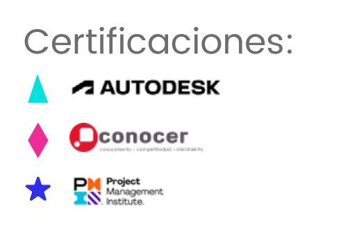

🏛️ Licenciatura Ejecutiva en Arquitectura
Aplica EQ | Categoría: Diseño, Arte y Arquitectura
📖 ¿De qué trata esta Licenciatura?
Forma profesionales con la capacidad de diseñar y gestionar proyectos arquitectónicos innovadores, sostenibles y funcionales, con conciencia social y dominio de normativas nacionales e internacionales.
📌 Detalles del Programa
- ⏳ Duración: 3 años (9 cuatrimestres).
- 🛡️ Modalidad: 100% en línea.
- Plataforma: Blackboard con acceso 24/7.
- Clases: 1 a 2 sesiones semanales opcionales (grabadas).
- Soporte: Asistencia Lince todo el año.
- Recursos: Biblioteca virtual, Office y software especializado.
🌟 Razones para Estudiar en UVM
- Certificaciones laborales: 5 asignaturas con certificación avalada por Coursera y universidades líderes.
- Doble Titulación: Título nacional + opción internacional con National Louis University.
- Internacionalización: Viajes académicos, conferencias globales y experiencias internacionales.
- Alta empleabilidad: 80% mejora su situación laboral (Ipsos/UVM 2020).
💼 Oportunidades Laborales
Como egresado/a podrás trabajar en:
- 📌 Empresas constructoras y desarrolladoras: Diseñando, planificando y supervisando proyectos arquitectónicos.
- 📌 Proyectos de restauración: Conservación del patrimonio arquitectónico en colaboración con instancias gubernamentales.
- 📌 Despachos de arquitectura y diseño: Participando en diseño urbano, interiores y paisajismo.
- 📌 Consultoría o emprendimiento: Como arquitecto independiente o creando tu propio estudio de diseño y construcción.
🎓 Certificaciones Internacionales
🎯 Tips para Vender la Licenciatura
- 💡 "Ideal si te apasiona el diseño, la creatividad y la transformación del entorno urbano o natural."
- 🔍 "Aprenderás desde diseño digital, instalaciones y estructuras hasta urbanismo, interiorismo y sustentabilidad."
- 📌 "Podrás trabajar en despachos, constructoras o crear tu propio estudio de arquitectura."
🛑 Objeciones Comunes y Respuestas
- ❓ "¿Arquitectura en línea?"
✅ "Sí, con herramientas digitales, software especializado y acompañamiento constante, desarrollas habilidades prácticas desde casa." - ❓ "¿Tiene campo laboral?"
✅ "Sí. Arquitectura es clave en desarrollo urbano, restauración, diseño y construcción." - ❓ "¿Requiere saber dibujar?"
✅ "No es necesario ser experto. Aprenderás representación gráfica, digital y técnicas de dibujo paso a paso."